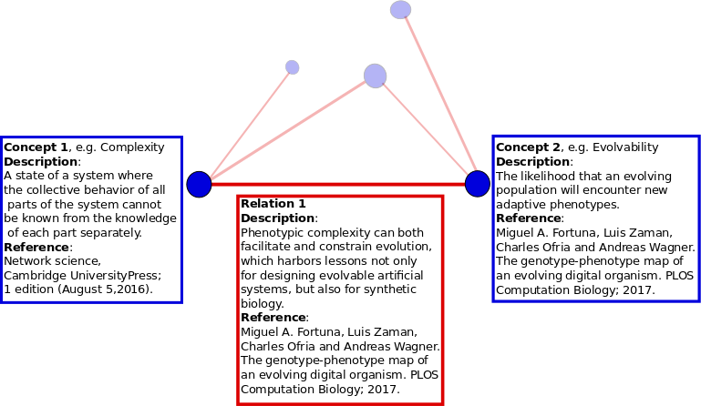
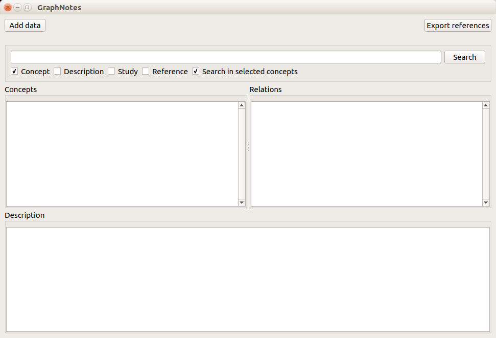

What is GraphNotes?
The problem:
Research requires remembering many facts and details with credible references. It is easy to forget a specifc piece of information after a few days or months, or forget where you read it. Scientists usually mark PDF files or write down important details in text documents. These files can quickly pile up and make it tedious to find specific information.
A traditional method for gathering all the necessary information is using paper note cards. In a note card, we write specific information along with their references. We then organize the note cards and use them for writing papers or books. This method has a few drawbacks, namely, it will be difficult to keep all the cards organized as we add more of them, and it will become more difficult to find a specific card quickly. Therefore, people usually prepare and keep a separate set of note cards for each project. This is inefficient!
Solution:
Introducing GraphNotes, I offer a solution to this problem. This is a software for organizing and easily retrieving scientific concepts. As you read textbooks or journal articles, you come across critical concepts that will be likely useful in the future. You can store them in GraphNotes and find them quickly whenever you need them. GraphNotes uses a graph structure to store your notes. A graph is a series of nodes that are connected to one another if there is a relationship between any two nodes. Each concept comprises a node in the graph. If there is a relation between two concepts, it will be an link between the concepts. Each node or link can store as many descriptions and references as necessary. When you need to retrieve a specific information, all you need is to search for the concept you are looking for, and see all descriptions about it, and all of its relations with other concepts. The figure below shows a schematic view of how concepts and their relations are organized in GraphNotes. The figure shows descriptions for two concepts and a relation between them, in a graph with five nodes and five edges.
How to use it?
Installation
There is no installation. Just download a zip file for your operating system (Windows/Mac/Linux), unzip it, and open the executable within the unzipped folder.
Initializing the program for the first time
If it is the first time you open GraphNotes, it will ask for a location to store its database file. The database file stores all the information you enter into the program, so keep it in a safe location (I recommend your Dropbox or other cloud storages folder). You can back up the database file and open it with GraphNotes on other computers.

Once you choose an existing database file or create a new one and open the program, you will see three empty panes: Concepts, Relations, and Description. The concepts pane shows the list of concepts you have added. Selecting a concept will show its descriptions in the Description pane, and its related concepts in the Relations pane. Selecting a related concept in the Relations pane will show the relation between the two concepts in the Description pane.
Above the three panes, there is a search bar, with option to limit the search, and two buttons to add data and export added references as a Bibtex file.
Adding a single concept and its descriptions
- Click on the Add data button.
- Type information in the Concept 1 section.
- To make organizing information easier, each concept has a Subcategory field. Use the Subcategory field to add specific details about a more general concept. For example, if you want to add information about the speed of light, you may type "Light" in the concept field, and type "Speed of" in the subcategory field. Writing a subcategory is optional.
- The Synonyms field is for writing other ways that the same concept may be written, or its other names, so that searching for either of them will return the same retult. Writing a synonym is optional.
- The Study field specifies the type of study of the reference, e.g. it can be an experimental or a theoretical study. Writing study type is optional.
- To add a reference, wright click in the white are of the Reference field and click on the New reference option. You may either type in the reference details or import references from a bibtex file. Adding a reference is optional.
Adding a relation between two concepts
- Click on the Add data button.
- Type the first concept, and maybe a Subcategory for the first concept.
- Type the second concept, and maybe a Subcategory for the second concept.
- Type a description for the relation between the two concepts in the Relatin field.
- You may add a study type in the Study field.
- To add a reference, right click on the Reference pane, and click New reference option. You may either type in the reference details or import references from a bibtex file.
Searching
- Use the Search bar on the main window.
- Use check boxes below the search field to specify where to search.
- The search results appear in the Concepts pane.
All the steps above can be repeated, i.e. a concept can have multiple descriptions and relations.